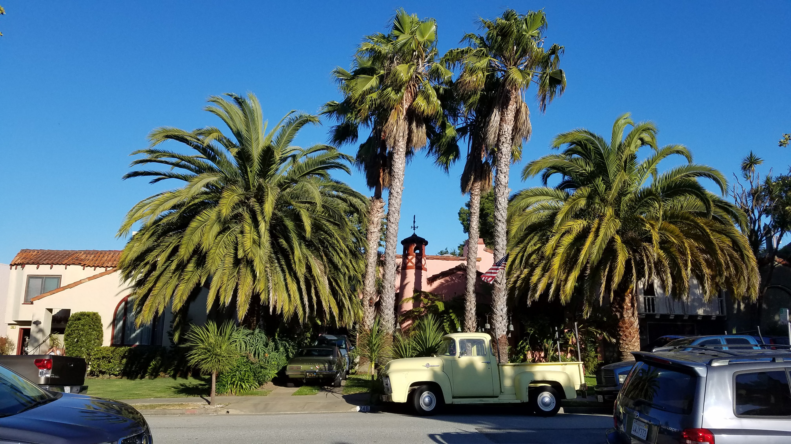

Despite all the fun I was having being a tourist, I was actually in San Francisco for work. I was hired as a Product Marketing Intern at OmniVirt, an advertisement tech start-up based in beautiful Millbrae.

Beautiful Millbrae: I walked by this beautiful house and its palm trees and antique cars on my way to work!
While there, I got to dabble in a bit of all sorts of work and learned a tremendous deal of marketing, growth hacking, and business development. See the table below to see what my work exactly entailed.
Table 1: My Work at OmniVirt
| Work Type | Scope of Work |
|---|---|
| Marketing | I took the lead on our social media accounts making sure to update daily. We primariliy targeted Facebook because that's where most of our target audience were located. |
| Growth Hacking | I learned the art of SEO optimization (ie. writing many articles in hopes that the keyword is picked up by the "algorithm.") I wrote many articles to that effect. |
| Business Development | I helped optimize our email prospecting process. I learned how to use data scrappers to scrape necessary data (ie. name, emails, etc.) This helped our team send out email blasts faster and more efficiently. |